Section III - Insulation Systems Design
Page 37
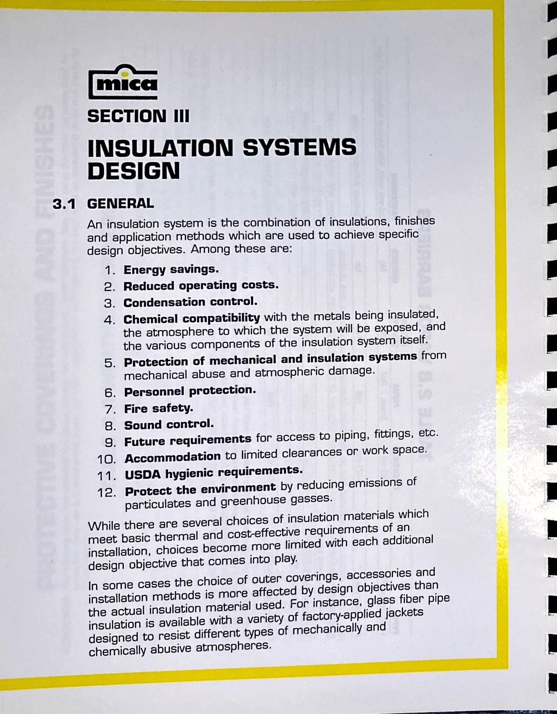
mra SECTION Ill INSULATION SYSTEMS DESIGN 3.1 GENERAL An insulation system is the combination of insulations, finishes and application methods which are used to achieve specific design objectives.
Among these are: 1.
2.
3.
4.
5.
6.
7.
8.
9.
IO.
11.
12.
Energy savings.
Reduced operating costs.
Condensation control.
Chemical compatibility with the metals being insulated, the atmosphere to which the system will be exposed, and the various components of the insulation system itself.
Protection of mechanical and insulation systems from mechanical abuse and atmospheric damage.
Personnel protection.
Fire safety.
Sound control.
Future requirements for access to piping, fittings, etc.
Accommodation to limited clearances or work space.
USDA hygienic requirements.
Protect the environment by reducing emissions of particulates and greenhouse gasses.
While there are several choices of insulation materials which meet basic thermal and cost-effective requirements of an installation, choices become more limited with each additional design objective that comes into play.
In some cases the choice of outer coverings, accessories and installation methods is more affected by design objectives than the actual insulation material used.
For instance, glass fiber pipe insulation is available with a variety of factory-applied jackets designed to resist different types of mechanically and chemically abusive atmospheres.
Page 38
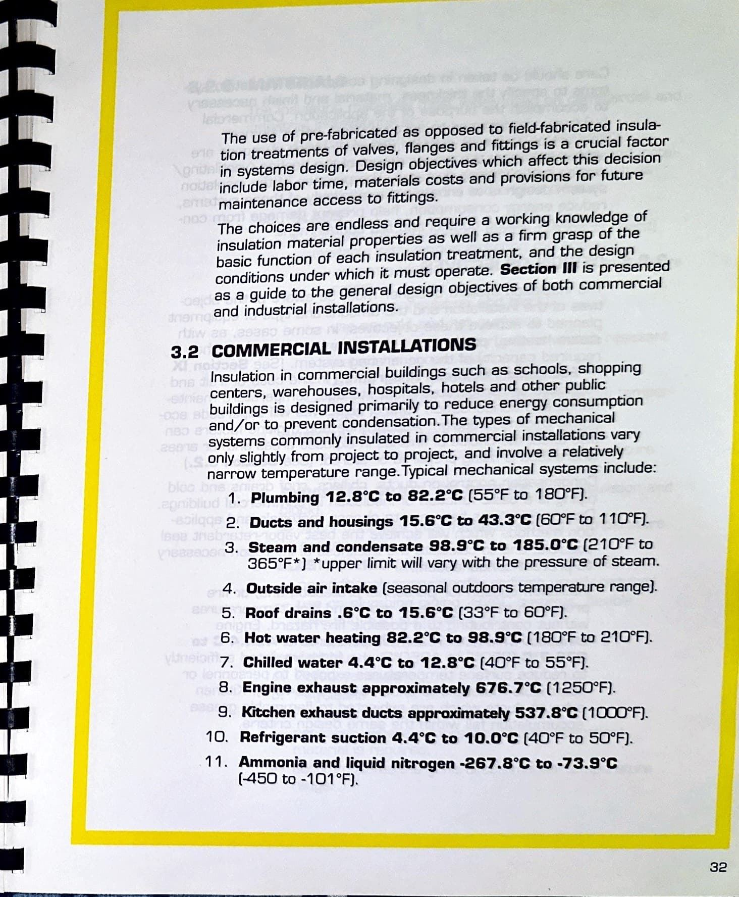
3.2 The use of pre-fabricated as opposed to field-fabricated insula- tion treatments of valves, flanges and fittings is a crucial factor in systems design.
Design objectives which affect this decision include labor time, materials costs and provisions for future maintenance access to fittings.
The choices are endless and require a working knowledge of insulation material properties as well as a firm grasp of the basic function of each insulation treatment, and the design conditions under which it must operate.
Section III is presented as a guide to the general design objectives of both commercial and industrial installations.
COMMERCIAL INSTALLATIONS Insulation in commercial buildings such as schools, shopping centers, warehouses, hospitals, hotels and other public buildings is designed primarily to reduce energy consumption and/or to prevent condensation.The types of mechanical systems commonly insulated in commercial installations vary only slightly from project to project, and involve a relatively narrow temperature range.
Typical mechanical systems include: 1.
Plumbing 12.80c to 82.20C (550Fto 1800F).
2.
Ducts and housings 15.SOC to 43.30C (600Ftn 1 IOOF).
a.
Steam and condensate 98.90C to 185.00C (2100F to 3650F*) *upper limit will vary with the pressure of steam.
4.
Outside air intake (seasonal outdoors temperature range).
5.
Roof drains .60C to 15.SOC (330F to 600FJ.
6.
Hot water heating 82.20C to 98.SOC to 2100F).
7.
Chilled water 4.40C to 12.80C (400F to 550F).
8.
Engine exhaust approximately 676.70C (12500F).
9.
Kitchen exhaust ducts approximately 537.80C (10000F).
10.
Refrigerant suction 4.40C to 10.OOC (400F to 500F).
11.
Ammonia and liquid nitrogen -267.80C to •73.SOC (450 to -101 OF).
32
Page 39
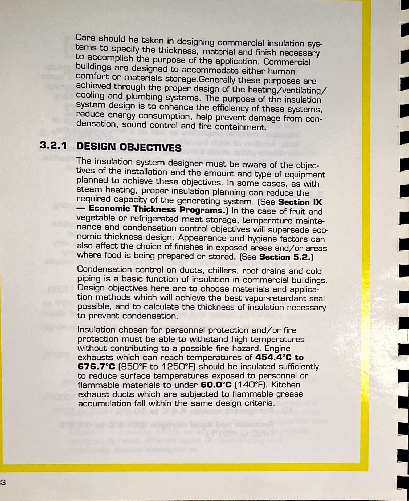
Care should be taken in designing commercial insulation sys- tems to specify the thickness, material and finish necessary to accomplish the purpose of the application.
Commercial buildings are designed to accommodate either human comfort or materials storage.Generally these purposes are achieved through the proper design of the heating/ventilating/ cooling and plumbing systems.
The purpose of the insulation system design is to enhance the efficiency of these systems, reduce energy consumption, help prevent damage from con- densation, sound control and fire containment.
3.2.1 DESIGN OBJECTIVES The insulation system designer must be aware of the objec- tives of the installation and the amount and type of equipment planned to achieve these objectives.
In some cases, as with steam heating, proper insulation planning can reduce the required capacity of the generating system.
(See Section IX — Economic Thickness Programs.) In the case of fruit and vegetable or refrigerated meat storage, temperature mainte- nance and condensation control objectives will supersede eco- nomic thickness design.
Appearance and hygiene factors can also affect the choice of finishes in exposed areas and/or areas where food is being prepared or stored.
(See Section 5.2.) Condensation control on ducts, chillers, roof drains and cold piping is a basic function of insulation in commercial buildings.
Design objectives here are to choose materials and applica- tion methods which will achieve the best vapor-retardant seal possible, and to calculate the thickness of insulation necessary to prevent condensation.
Insulation chosen for personnel protection and/or fire protection must be able to withstand high temperatures without contributing to a possible fire hazard.
Engine exhausts which can reach temperatures of 454.40C to 676.7 OC (8500F to 12500F) should be insulated sufficiently to reduce surface temperatures exposed to personnel or flammable materials to under 60.00C (1400F).
Kitchen exhaust ducts which are subjected to flammable grease accumulation fall within the same design criteria.
Page 40
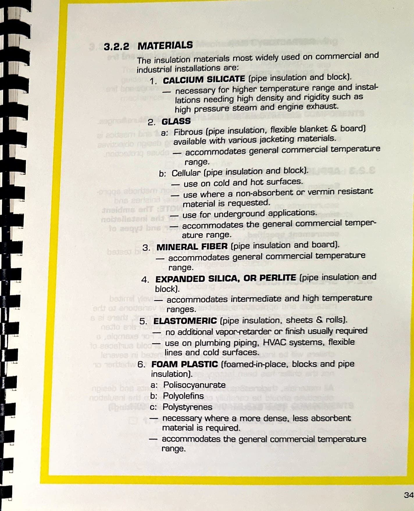
3.2.2 MATERIALS The insulation materials most widely used on commercial and industrial installations are: 1.
2.
CALCIUM SILICATE (pipe insulation and block).
— necessary for higher temperature range and instal- lations needing high density and rigidity such as high pressure steam and engine exhaust.
GLASS a: Fibrous (pipe insulation, flexible blanket & board) available with various jacketing materials.
— accommodates general commercial temperature range.
b: Cellular (pipe insulation and block).
— use on cold and hot surfaces.
— use where a non-absorbent or vermin resistant material is requested.
— use for underground applications.
— accommodates the general commercial temper- ature range.
MINERAL FIBER (pipe insulation and board).
3.
— accommodates general commercial temperature range.
EXPANDED SILICA, OR PERLITE (pipe insulation and 4.
block).
— accommodates intermediate and high temperature ranges.
ELASTOMERIC (pipe insulation, sheets & rolls).
5.
— no additional vapor-retarder or finish usually required — use on plumbing piping, HVAC systems, flexible lines and cold surfaces.
FOAM PLASTIC (foamed-in-place, blocks and pipe 6.
insulation).
a: Polisocyanurate b: Polyolefins c: Polystyrenes — necessary where a more dense, less absorbent material is required.
— accommodates the general commercial temperature range.
34
Page 41
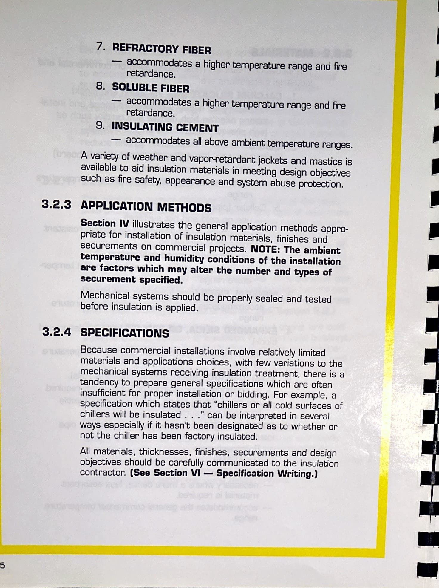
7.
REFRACTORY FIBER — accommodates a higher temperature range and fire retaxiance.
8.
SOLUBLE FIBER accommodates a higher temperawre range and fire retardance.
g.
INSULATING CEMENT — accommodates all above ambient temperature ranges.
A variety of weather and vapor-retardant jackets and mastics is available to aid insulation materials in meeting design objectives such as fire safety, appearance and system abuse protection.
3.2.3 APPLICATION METHODS Section IV illustrates the general application methods appro- priate for installation of insulation materials, finishes and securements on commercial projects.
NOTE: The ambient temperature and humidity conditions of the installation are factors which may alter the number and types of securement specified.
Mechanical systems should be properly sealed and tested before insulation is applied.
3.2.4 SPECIFICATIONS Because commercial installations involve relatively limited materials and applications choices, with few variations to the mechanical systems receiving insulation treatment, there is a tendency to prepare general specifications which are often insufficient for proper installation or bidding.
For example, a specification which states that "chillers or all cold surfaces of chillers will be insulated " can be interpreted in several ways especially if it hasn't been designated as to whether or not the chiller has been factory insulated.
All materials, thicknesses, finishes, securements and design objectives should be carefully communicated to the insulation contractor.
(See Section VI — Specification Writing.)
Page 42
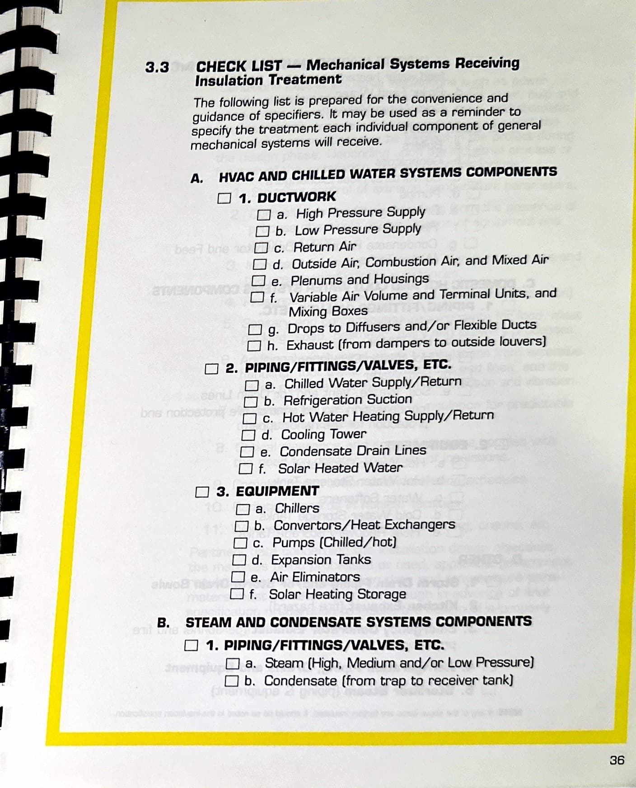
'i 3.3 B.
CHECK LIST — Mechanical Systems Receiving Insulation Treatment The following list is prepared for the convenience and guidance of specifiers.
It may be used as a reminder to specify the treatment each individual component of general mechanical systems will receive.
A.
HVAC AND CHILLED WATER SYSTEMS COMPONENTS CJ 1.
DUCTVVORK a.
High Pressure Supply Ü b.
Low Pressure Supply Ü c.
Return Air C] d.
Outside Air, Combustion Air, and Mixed Air C] e.
Plenums and Housings CJ f.
Variable Air Volume and Terminal Units, and Mixing Boxes C] g.
Drops to Diffusers and/or Flexible Ducts Ü h.
Exhaust (from dampers to outside louvers) C] 2.
PIPING/FITTINGS/VALVES, ETC.
Ü a.
Chilled Water Supply/Return C] b.
Refrigeration Suction C] c.
Hot Water Heating Supply/Return C] d.
Cooling Tower Ü e.
Condensate Drain Lines C] f.
Solar Heated Water 3.
EQUIPMENT C] a.
Chillers Ü b.
Convertors/Heat Exchangers Ü c.
Pumps (Chilled/hot) C] d.
Expansion Tanks Ü e.
Air Eliminators Ü f.
Solar Heating Storage STEAM AND CONDENSATE SYSTEMS COMPONENTS C] 1.
PIPING/FITTINGS/VALVES, ETC.
a.
Steam (High, Medium and/or Low Pressure) b.
Condensate (from trap to receiver tank) 36
Page 43
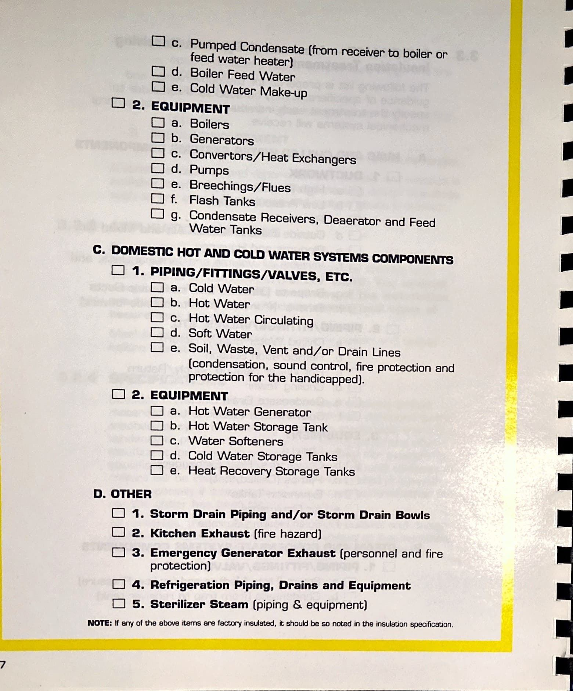
C] c.
Pumped Condensate (from receiver to boiler or feed water heater) Ü d.
Boiler Feed Water C] e.
Cold Water Make-up C] 2.
EQUIPMENT Ü a.
Boilers b.
Generators Ü c.
Convertors/Heat Exchangers C] d.
Pumps e.
Breechings/Flues C] f.
Flash Tanks Ü g.
Condensate Receivers, Deaerator and Feed Water Tanks C.
DOMESTIC HOT AND COLD WATER SYSTEMS COMPONENRS 1.
PIPING/FITTINGS/VALVES, ETC.
C] a.
Cold Water Ü b.
Hot Water c.
Hot Water Circulating d.
Soft Water Ü e.
Soil, Waste, Vent and/or Drain Lines (condensation, sound control, fire protection and protection for the handicapped).
2.
EQUIPMENT Ü a.
Hot Water Generator Ü b.
Hot Water Storage Tank Ü c.
Water Softeners Ü d.
Cold Water Storage Tanks C] e.
Heat Recovery Storage Tanks D.
OTHER Ü 1.
Storm Drain Piping and/or Storm Drain Bowls Ü 2.
Kitchen Exhaust (fire hazard) C] 3.
Emergency Generator Exhaust (personnel and fire protection) 4.
Refrigeration Piping, Drains and Equipment 5.
Sterilizer Steam (piping & equipment) NOTE: tf any of above terns are insulated, it should be so noted in tie insulauon specificauon
Page 44
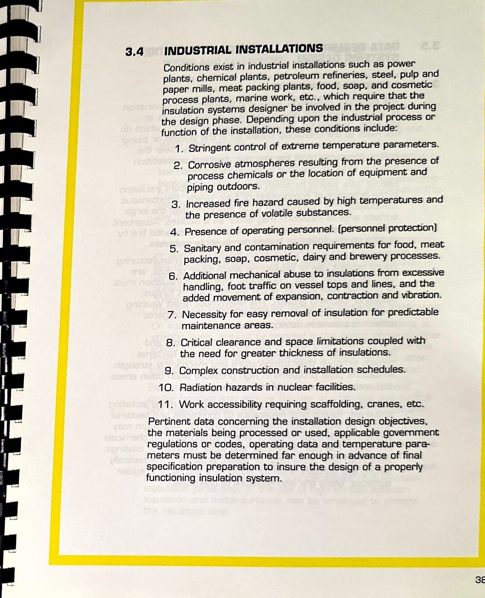
3.4 INDUSTRIAL INSTALLATIONS Conditions exist in industrial installations such as power plants, chemical plants, petroleum refineries, steel, pulp and paper mills, meat packing plants, food, soap, and cosmetic process plants, marine work, etc., which require that the insulation systems designer be involved in the project during the design phase.
Depending upon the industrial process or function of the installation, these conditions include: 1.
Stringent control of extreme temperature parameters.
2.
Corrosive atmospheres resulting from the presence of process chemicals or the location of equipment and piping outdoors.
Increased fire hazard caused by high temperatures and 3.
the presence of volatile substances.
Presence of operating personnel.
(personnel protection) 4.
Sanitary and contamination requirements for food, meat 5.
packing, soap, cosmetic, dairy and brewery processes.
Additional mechanical abuse to insulations from excessive 6.
handling, foot traffic on vessel tops and lines, and the added movement of expansion, contraction and vibration.
Necessity for easy removal of insulation for predictable 7.
maintenance areas.
Critical clearance and space limitations coupled with 8.
the need for greater thickness of insulations.
Complex construction and installation schedules.
9.
Radiation hazards in nuclear facilities.
IO.
Work accessibility requiring scaffolding, cranes, etc.
11.
Pertinent data concerning the installation design objectives, the materials being processed or used, applicable government regulations or codes, operating data and temperature para- meters must be determined far enough in advance of final specification preparation to insure the design of a properly functioning insulation systems
Page 45
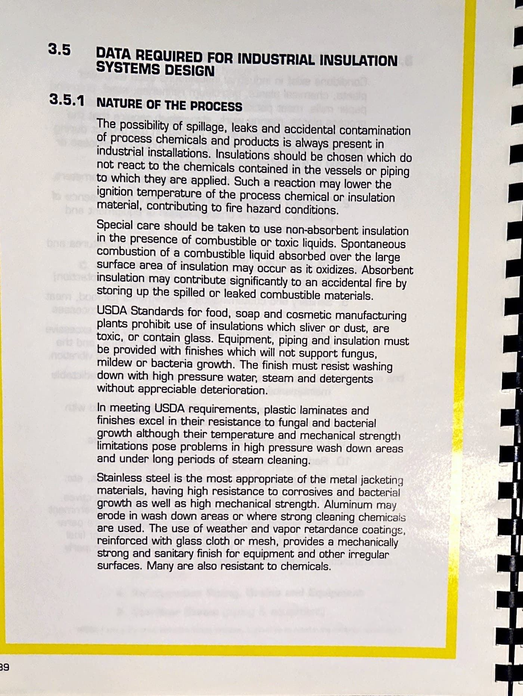
3.5 DATA REQUIRED FOR INDUSTRIAL INSULATION SYSTEMS DESIGN 3.5.1 NATURE OF THE PROCESS The possibility of spillage, leaks and accidental contamination of process chemicals and products is always present in industrial installations.
Insulations should be chosen which do not react to the chemicals contained in the vessels or piping to which they are applied.
Such a reaction may lower the ignition temperature of the process chemical or insulation material, contributing to fire hazard conditions.
Special care should be taken to use non-absorbent insulation in the presence of combustible or toxic liquids.
Spontaneous combustion of a combustible liquid absorbed over the large surface area of insulation may occur as it oxidizes.
Absorbent insulation may contribute significantly to an accidental fire by storing up the spilled or leaked combustible materials.
USDA Standards for food, soap and cosmetic manufacturing plants prohibit use of insulations which sliver or dust, are toxic, or contain glass.
Equipment, piping and insulation must be provided with finishes which will not support fungus, mildew or bacteria growth.
The finish must resist washing down with high pressure water, steam and detergents without appreciable deterioration.
In meeting IJSDA requirements, plastic laminates and finishes excel in their resistance to fungal and bacterial growth although their temperature and mechanical strength limitations pose problems in high pressure wash down areas and under long periods of steam cleaning.
Stainless steel is the most appropriate of the metal jacketing materials, having high resistance to corrosives and bacterial growth as well as high mechanical strength.
Aluminum may erode in wash down areas or where strong cleaning chemicats are used.
The use of weather and vapor retardance coatings, reinforced with glass cloth or mesh, provides a mechanically strong and sanitary finish for equipment and other irregular surfaces.
Many are also resistant to chemicals.
39
Page 46
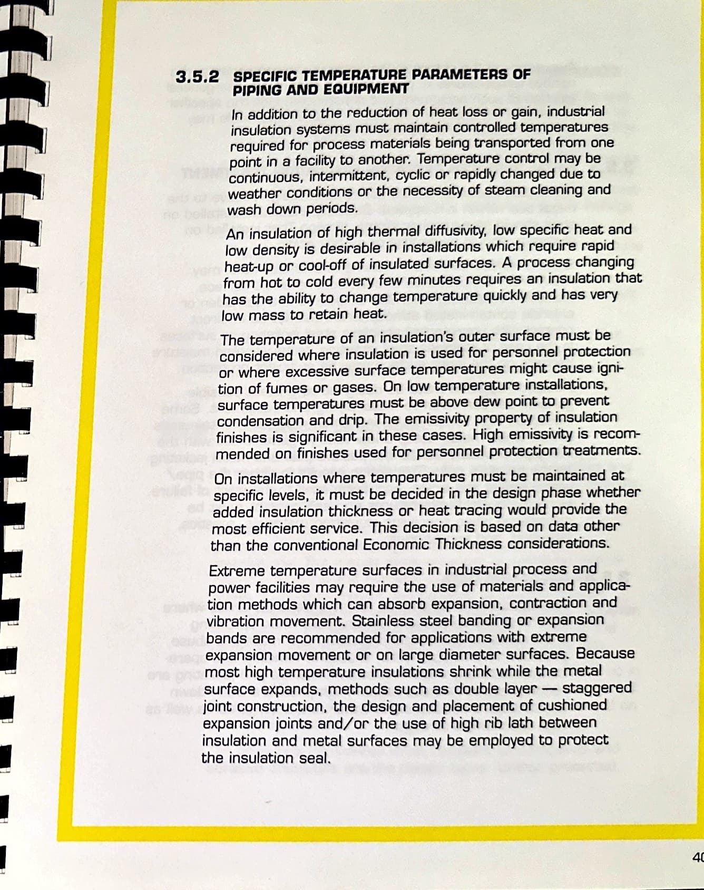
3.5.2 SPECIFIC TEMPERATURE PARAMETERS OF PIPING AND EQUIPMENT In addition to the reduction of heat loss or gain, industrial insulation systems must maintain controlled temperatures required for process materials being transported from one point in a facility to another.
Temperature conwol may be continuous, intermitent, cyclic or rapidly changed due to weather conditions or the necessib/ of steam cleaning and wash down periods.
An insulation of high thermal diffusivity, low specific heat and low density is desirable in installations which require rapid heat-up or cool-off of insulated surfaces.
A process changing from hot to cold every few minutes requires an insulation that has the ability to change temperature quickly and has very low mass to retain heat.
The temperature of an insulation's outer surface must be considered where insulation is used for personnel protection or where excessive surface temperatures might cause igni- tion of fumes or gases.
On low temperature installations, surface temperatures must be above dew point to prevent condensation and drip.
The emissivity property of insulation finishes is significant in these cases.
High emissivity is recom- mended on finishes used for personnel protection treatrnents.
On installations where temperatures must be maintained at specific levels, it must be decided in the design phase whether added insulation thickness or heat tracing would provide the most efficient service.
This decision is based on data other than the conventional Economic Thickness considerations.
Extreme temperature surfaces in industrial process and power facilities may require the use of materials and applica- tion methods which can absorb expansion, contraction and vibration movement.
Stainless steel banding or expansion bands are recommended for applications with extreme expansion movement or on large diameter surfaces.
Because most high temperature insulations shrink while the metal surface expands, methods such as double layer — staggered joint construction, the design and placement of cushioned expansion joints and/or the use of high rib lath between insulation and metal surfaces may be employed to protect the insulation seal.
Page 47
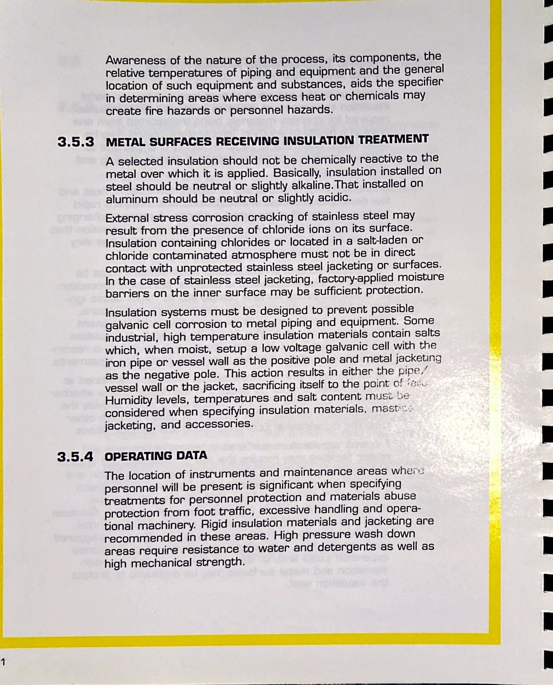
Awareness of the nature of the process, its components, the relative temperatures of piping and equipment and the general location of such equipment and substances, aids the specifier in determining areas where excess heat or chemicals may create fire hazards or personnel hazards.
3.5.3 METAL SURFACES RECEIVING INSULATION TREATMENT A selected insulation should not be chemically reactive to the metal over which it is applied.
Basically, insulation installed on steel should be neutral or slightly alkaline.
That installed on aluminum should be neutral or slightly acidic.
External stress corrosion cracking of stainless steel may result from the presence of chloride ions on its surface.
Insulation containing chlorides or located in a salt-laden or chloride contaminated atmosphere must not be in direct contact with unprotected stainless steel jacketing or surfaces.
In the case of stainless steel jacketing, factory-applied moisture barriers on the inner surface may be sufficient protection.
Insulation systems must be designed to prevent possible galvanic cell corrosion to metal piping and equipment.
Some industrial.
high temperature insulation materials contain salts which, when moist, setup a low voltage galvanic cell with the iron pipe or vessel wall as the positive pole and metal jacketing as the negative pole.
This action results in either the pipe/ vessel wall or the jacket, sacrificing itself to the point of Humidity levels, temperatures and salt content must, be considered when specifying insulation materials, masr.•t jacketing, and accessories.
3.5.4 OPERATING DATA The location of instruments and maintenance areas where personnel will be present is significant when specifying treatments for personnel protection and materials abuse protection from foot traffic, excessive handling and opera- tional machinery.
Rigid insulation materials and jacketing are recommended in these areas.
High pressure wash down areas require resistance to water and detergents as well as high mechanical strength.
1
Page 48
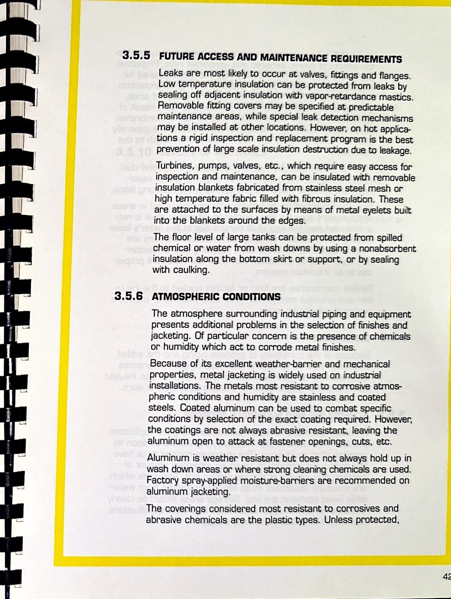
3.5.5 FUTURE ACCESS AND MAINTENANCE REQUIREMENTS Leaks are most likely to occur at valves, füngs and flanges.
Low temperature insulation can be protected from leaks by sealing off adjacent insulation with vapor-retardance mastics.
Removable flting covers may be specified at predictable maintenance areas, while special leak detection mechanisms may be installed at other locations.
However, on hot applicæ tions a rigid inspection and replacement program is the best prevention of large scale insulation destruction due to leakage.
Turbines, pumps, valves, etc., which require easy access for inspection and maintenance, can be insulated with removable insulation blankets fabricated from stainless steel mesh or high temperature fabric filled With fibrous insulation.
These are attached to the surfaces by means of metal eyelets built into the blankets around the edges.
3.5.s The floor level of large tanks can be protected from spilled chemical or water from wash downs by using a nonabsorbent insulation along the bottom skirt or support, or by sealing with caulking.
ATMOSPHERIC CONDITIONS The atmosphere surrounding industrial piping and equipment presents additional problems in the selection of finishes and jacketing.
Of particular concern is the presence of chemicals or humidity which act to corrode metal finishes.
Because of its excellent weather-barrier and mechanical properties, metal jacketing is widely used on industrial installations.
The metals most resistant to corrosive atmos- pheric conditions and humidity are stainless and coated steels.
Coated aluminum can be used to combat specific conditions by selection of the exact coating required.
However, the coatings are not always abrasive resistant, leaving the aluminum open to attack at fastener openings, cuts, etc.
Aluminum is weather resistant but does not always hold up in wash down areas or where strong cleaning chemicals are used.
Factory spray-applied moisture-barriers are recommended on aluminum jacketing.
The coverings considered most resistant to corrosives and abrasive chemicals are the plastic types.
Unless protected.
Page 49
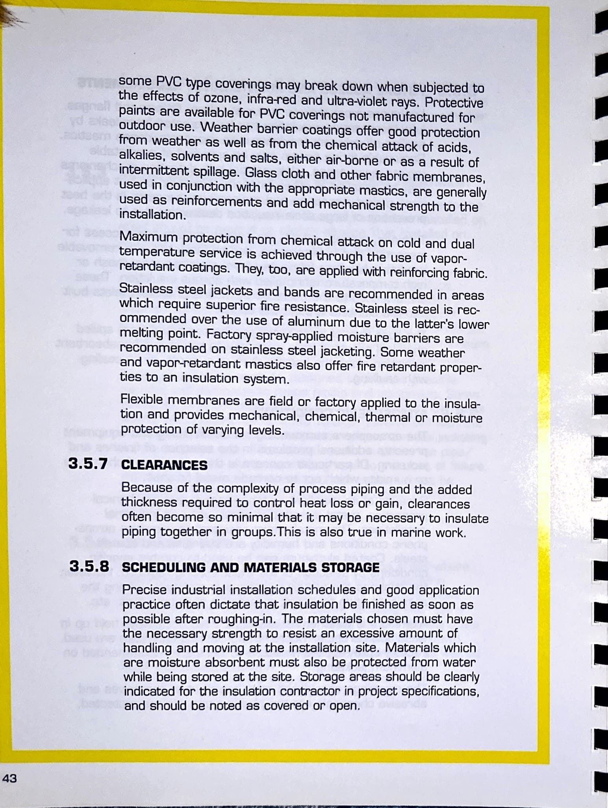
3.5.7 some PVC type coverings may break down when subjected to the effects of ozone, infra-red and ultra-violet rays.
Protective paints are available for PVC coverings not manufactured for outdoor use.
Weather barrier coatings offer good protection from weather as well as from the chemical attack of acids, alkalies, solvents and salts, either air-borne or as a result of intermitent spillage.
Glass cloth and other fabric membranes, used in conjunction with the appropriate mastics, are generally used as reinforcements and add mechanical strength to the installation.
Maximum protection from chemical atack on cold and dual temperature service is achieved through the use of vapor- retardant coatings.
They, too, are applied with reinforcing fabric.
Stainless steel jackets and bands are recommended in areas which require superior fire resistance.
Stainless steel is rec- ommended over the use of aluminum due to the latter's lower melting point.
Factory spray-applied moisture barriers are recommended on stainless steel jacketing.
Some weather and vapor-retardant mastics also offer fire retardant proper- ties to an insulation system.
Flexible membranes are field or factory applied to the insula- tion and provides mechanical, chemical, thermal or moisture protection of varying levels.
CLEARANCES Because of the complexity of process piping and the added thickness required to control heat loss or gain, clearances often become so minimal that it may be necessary to insulate piping together in groups.
This is also true in marine work.
3.5.8 SCHEDULING AND MATERIALS STORAGE Precise industrial installation schedules and good application practice often dictate that insulation be finished as soon as possible after roughing-in.
The materials chosen must have the necessary strength to resist an excessive amount of handling and moving at the installation site.
Materials which are moisture absorbent must also be protected from water while being stored at the site.
Storage areas should be clearly indicated for the insulation contractor in project specifications, and should be noted as covered or open.
Page 50
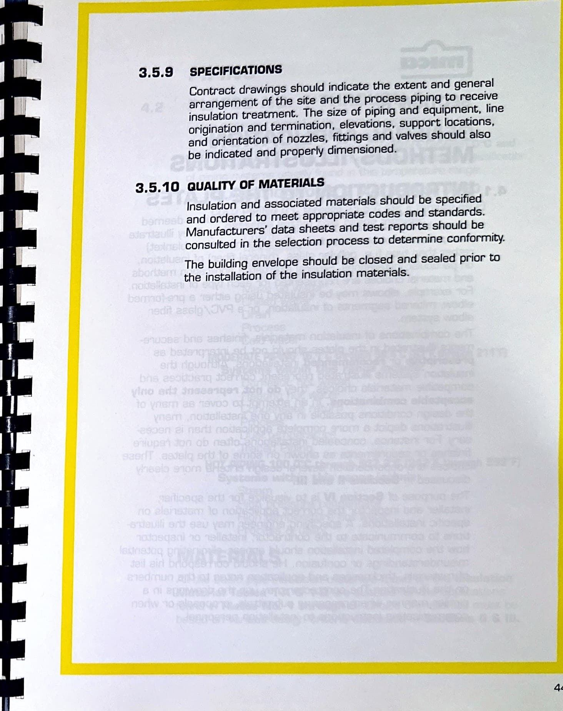
3.5.9 3.5.10 SPECIFICATIONS Contract drawings should indicate the extent and general arrangement of the site and the process piping to receive insulation treatment.
The size of piping and equipment, Jine origination and termination, elevations, support locations, and orientation of nozzles, fittings and valves should also be indicated and properly dimensioned.
QUALITY OF MATERIALS Insulation and associated materials should be specified and ordered to meet appropriate codes and standards.
Manufacturers' data sheets and test reports should be consulted in the selection process to determine conformity.
The building envelope should be closed and sealed prior to the installation of the insulation materials.
4